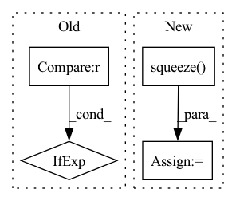

Pattern ID :13396

Before Change
if self.output_layer.bias is not None:
new_bias = torch.empty(n_classes_to_add)
fan_in, _ = nn.init._calculate_fan_in_and_fan_out(self.output_layer.weight)
bound = 1 / math.sqrt(fan_in) if fan_in > 0 else 0
nn.init.uniform_(new_bias, -bound, bound)
self.output_layer.bias = nn.parameter.Parameter(
torch.cat([self.output_layer.bias, new_bias], axis=0)
After Change
if self.output_layer.bias is not None:
new_bias = torch.mean(self.output_layer.bias).unsqueeze(1).T
if n_classes_to_add > 1:
new_bias = new_bias.unsqueeze(1).T.repeat(1, n_classes_to_add, 1).squeeze()
self.output_layer.bias = nn.parameter.Parameter(
torch.cat([self.output_layer.bias, new_bias], axis=0)
)
self.output_layer.out_features += n_classes_to_add
In pattern: SUPERPATTERN
Frequency: 3
Non-data size: 4
Instances
Fragment ID: 45143441
Project Name: online-ml/river-torch
Commit Name: 27f914a787bc844de5af4720487e2314f206960d
Time: 2022-09-26
Author: cedric.kulbach@googlemail.com
File Name: river_torch/classification/classifier.py
M Class Name: Classifier
N Class Name: Classifier
M Method Name: _add_output_features(2)
N Method Name: _add_output_features(2)
M Parent Class: DeepEstimator,base.Classifier
N Parent Class: DeepEstimator,base.Classifier
M File Name: river_torch/classification/classifier.py
N File Name: river_torch/classification/classifier.py
M Start Line: 300
M End Line: 310
N Start Line: 300
N End Line: 311
'>
Before Change
text_emo_vecs_origin = self.textEmoEmbs(torch.LongTensor(list(range(self.num_classes))).to(self.device))
text_emo_vecs = text_emo_vecs_origin.unsqueeze(0).repeat(batch_size, 1, 1)
text_attn_weights = self.attention(output_text, text_emo_vecs)
logits = text_attn_weights if logits is None else logits + text_attn_weights
if "a" in self.modalities:
output_audio, _ = self.RNNs[1](X_audio)
After Change
scores = torch.cat(tuple(scores), dim=0).transpose(0, 2)
logits = self.modality_weights(scores)
logits = logits.squeeze().t()
// for i in range(len(self.modalities)):
// if i == 0:
// logits = scores[i] * self.modality_weights[i]
'>
Fragment ID: 45143444
Project Name: wenliangdai/modality-transferable-mer
Commit Name: eaf8a7cf6ec5b7ed6389b9d73cd6bb31fc1576c2
Time: 2020-06-10
Author: wenliang.dai.1995@gmail.com
File Name: src/models/temp.py
M Class Name: EmotionEmbAttnModel
N Class Name: EmotionEmbAttnModel
M Method Name: forward(4)
N Method Name: forward(4)
M Parent Class: nn.Module
N Parent Class: nn.Module
M File Name: src/models/temp.py
N File Name: src/models/temp.py
M Start Line: 71
M End Line: 94
N Start Line: 74
N End Line: 105
'>
Before Change
err = np.mean(
np.abs(np.concatenate(coeffs) - torch.cat(coeffs2, -1).squeeze().numpy())
)
print("haar coefficient error scale 2", err, ["ok" if err < 1e-4 else "failed!"])
assert err < 1e-4
After Change
err = np.mean(np.abs(pywt_coeffs - ptwt_coeffs))
print("haar coefficient error scale 2", err, ["ok" if err < 1e-6 else "failed!"])
assert np.allclose(pywt_coeffs, ptwt_coeffs)
rec = waverec(coeffs2, wavelet).squeeze().numpy()
err = np.mean(np.abs((data - rec)))
print("haar reconstruction error scale 2", err, ["ok" if err < 1e-6 else "failed!"])
assert np.allclose(data, rec)
'>
Fragment ID: 45143445
Project Name: v0lta/pytorch-wavelet-toolbox
Commit Name: c52a0038ca7ceb817da834840a1655d55ff6f1a3
Time: 2021-07-02
Author: moritz@wolter.tech
File Name: tests/test_convolution_fwt.py
M Class Name: AnonimousClass
N Class Name: AnonimousClass
M Method Name: test_conv_fwt_haar_lvl2(0)
N Method Name: test_conv_fwt_haar_lvl2(0)
M Parent Class:
N Parent Class:
M File Name: tests/test_convolution_fwt.py
N File Name: tests/test_convolution_fwt.py
M Start Line: 42
M End Line: 49
N Start Line: 22
N End Line: 56